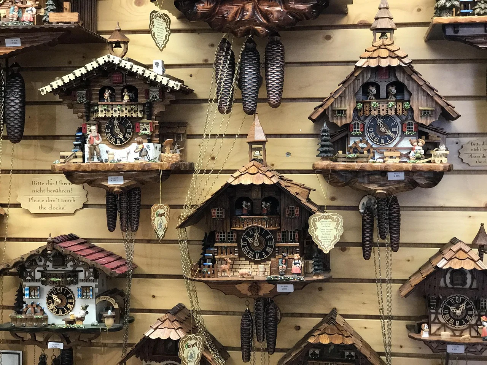
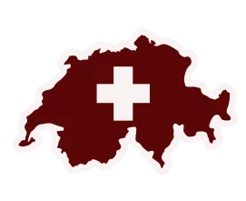

Zúrich
La ciudad más grande de Suiza, conocida por su lago, su casco antiguo medieval y su vibrante vida cultural.
Más información →Naturaleza, cultura, gastronomía y precisión alpina
Conoce las ciudades y pueblos más emblemáticos de Suiza
La ciudad más grande de Suiza, conocida por su lago, su casco antiguo medieval y su vibrante vida cultural.
Más información →
Ciudad internacional a orillas del lago Lemán, famosa por su Jet d’Eau y su ambiente cosmopolita.
Más información →
Ciudad cultural a orillas del Rin, conocida por su arquitectura histórica y su vibrante escena artística.
Más información →

